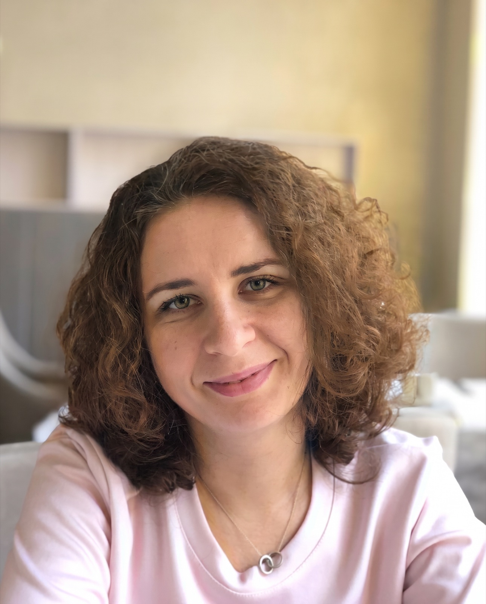
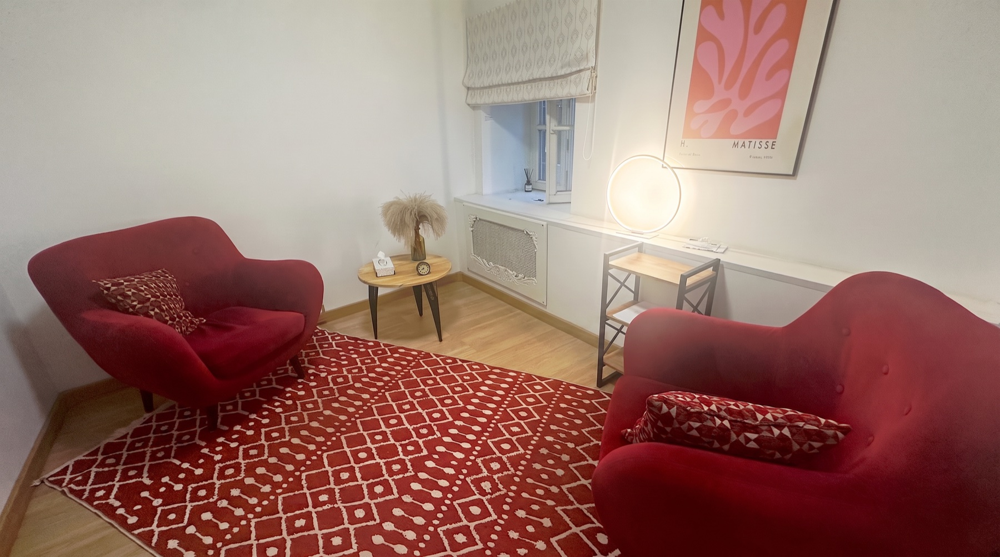

Александра Гежа
Психолог, гештальт-терапевт
Здесь можно остановиться, прислушаться к себе и понять, куда двигаться дальше
Если трудно в отношениях, проживается утрата, потерян ориентир или кажется, что жизнь идёт не по вашему сценарию — на встречах будем исследовать это вместе.

С чем можно прийти
Не обязательно заранее точно понимать, что с вами происходит. Иногда достаточно ощущения: «Мне сложно, но я пока не знаю почему».
-
Тревога и страх
Бессонница, беспокойство о будущем, страх перемен, отношений или выхода на работу.
-
Тоска и утрата
Когда трудно отпустить прошлое, бывшие отношения или детство; когда кажется, что впереди нет хорошего.
-
Кризисы и потерянность
Чувство безвыходности, отсутствие опоры, понимания себя и того, куда двигаться дальше.
-
Повторяющиеся сценарии
Когда снова и снова возникают похожие болезненные отношения, выборы или ситуации.
-
Неопределённость и выбор
Когда неясно, чем заниматься, чего хотеть, на чём сфокусироваться и как начать движение.
-
Отношения
Любовные, семейные, дружеские и партнёрские отношения; кризисы, непонимание, созависимость и детско-родительские конфликты.
Если не нашли свой запрос — можно написать мне и обсудить его.
Как я работаю
Психотерапия — не волшебная таблетка и не способ стать «правильным». Это пространство, в котором можно внимательнее увидеть себя, свои чувства, потребности и жизненные истории.
-
Без переделывания и спасательства
Я не ставлю диагнозы, не лечу и не даю готовых рецептов. Не пытаюсь переделать или «исправить» человека. Если нужна врачебная помощь, бережно помогу сориентироваться и обратиться к подходящему специалисту.
-
Ясно и по договорённости
Мне важно, чтобы в работе было достаточно прозрачности: мы обсуждаем формат, границы и всё, что вызывает вопросы. Доверие строится там, где можно говорить честно и быть услышанным.
-
С вниманием к живому
Для меня важно то, что происходит с вами здесь и сейчас. Можно не торопиться, не быть сильным и не подбирать «правильные» слова. Вместе мы будем распутывать непростые жизненные истории, возвращать опору и честный диалог с собой.
Формат и стоимость
Встречи проходят онлайн и очно в Москве. Продолжительность одной сессии — 55 минут.
-
Индивидуальная консультация онлайн
4 000 ₽
Встреча в удобном для вас онлайн-формате.
-
Индивидуальная консультация очно
4 000 ₽
Москва, «Международная Академия Гештальта» (МАГ).
-
Семейная и парная консультация
6 000 ₽
Работа с отношениями, конфликтами, кризисами и поиском взаимопонимания.
Если вам нужно отменить очную встречу, пожалуйста, сообщите об этом не позднее чем за 24 часа. При отмене менее чем за 24 часа удерживается стоимость аренды кабинета.

Обо мне
Моё главное увлечение в жизни — это человек и его разнообразный внутренний мир. Мне всегда было интересно, как устроена я сама и другой человек напротив меня. Именно так я пришла в мир психологии. А мой богатый жизненный опыт и интересная, насыщенная жизнь позволили изучать совершенно разных людей в самых неожиданных жизненных обстоятельствах.
Веду частную психологическую практику с 2021 года.
По первому образованию я социолог. Окончила вуз с красным дипломом, затем аспирантуру и написала диссертацию на тему «Динамика социальных ценностей поколения 90-х годов XX века».
Позже получила профессиональную переподготовку по психологическому консультированию. Закончила первую ступень гештальт-терапии в «Институте современной гештальт-терапии», а сейчас заканчиваю вторую ступень в «Международной Академии Гештальта».
Также прошла двухгодичный курс «Характерологический семинар О.М. Суса. Теория 12 психотипов».
Параллельно было множество конференций, семинаров, терапевтических групп, личной терапии и супервизий. И по-прежнему у меня много планов по дальнейшему развитию, потому что остановиться в психологии невозможно!
Вопросы перед первой встречей
Необязательно заранее точно понимать, что с вами происходит, и подбирать правильные слова. Можно начать с того, что беспокоит сейчас, даже если это пока только смутное ощущение.
Мы знакомимся и говорим о том, что привело вас в терапию. Вы рассказываете столько, сколько готовы рассказать. Вместе обсуждаем ваши ожидания и договариваемся о дальнейшем формате работы.
Я не выдаю готовых решений и не решаю за человека, как ему жить. Мы вместе исследуем происходящее, чтобы вы могли лучше понимать себя, свои чувства и принимать собственные решения.
Я не ставлю диагнозы и не назначаю лечение. Если увижу, что для вашего состояния нужна врачебная помощь или специалист другого профиля, честно и бережно скажу об этом и помогу сориентироваться.
Контакты
Если вы хотите записаться на консультацию или задать вопрос, напишите мне в Telegram или позвоните.
- Telegram @Alyonok
- Телефон +7 926 625-71-73
Очные встречи
Москва, «Международная Академия Гештальта» (МАГ)
1-й Спасоналивковский переулок, 8, стр. 1
Метро «Полянка» или «Октябрьская»